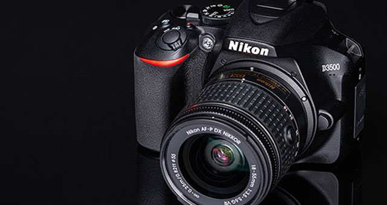
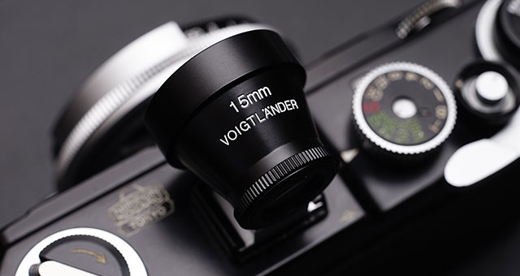

니콘이미징코리아
Nikon Imaging Korea

광학기기 전문기업 니콘의 한국법인으로 2006년에 창립했습니다.
창립 이래, 최첨단 디지털 영상기술을 탑재한 제품과 뛰어난 품질의 A/S를 제공함과 동시에,
출사, 니콘스쿨, 디지털 라이브 쇼, 각종 세미나 등 사진, 영상 문화와 관련된 다양한 활동을 다방면으로 전개하여
지난 10년 동안 국내 카메라 산업 발전에 이바지했습니다.

니콘이미징코리아는 한 세기 가까이 축적해온 니콘만의 광학과 정밀 가공에 관한 기술력을 기반으로
고객에게 풍부한 사진, 영상 생활을 제안함으로써, 고객의 가슴을 뛰게 하는 감동창조 경영에 힘쓰고 있습니다.
또한, 최근 발표한 차세대 프로페셔널 카메라 D5, D500이나 디지털 카메라와 스마트 디바이스를
무선으로 상시 접속할 수 있는 어플리케이션 ‘SnapBridge’ 등
영상 산업의 미래에도 선도적인 역할을 하고 있습니다.
top